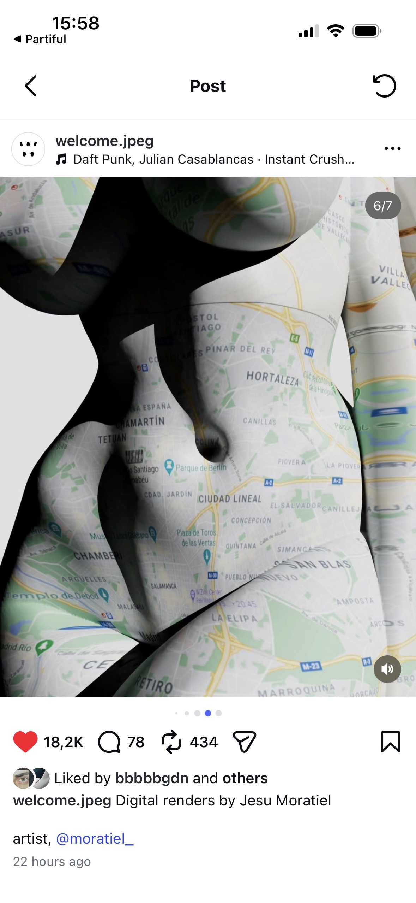

Jesu Moratiel — Madrid map torso sculpture
The map is not background — it becomes body topology. Good evidence for geography/data fused with sculpture.
Instagram screenshot from welcome.jpeg carousel, credited to Jesu Moratiel / @moratiel_. Slide 6/7; Madrid map over abstract torso form.
Madrid map stretched over folded torsoblack void-like cavitiesyellow road ringssoft plastic surfacecartographic labels as skinbody topology